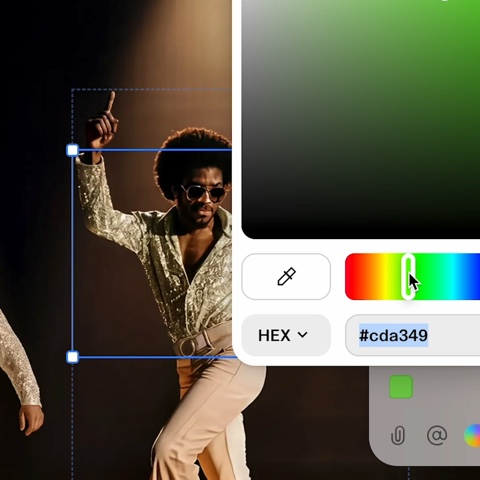
Dmitriy (Dima) Smirnov
Member of Technical Staff at OpenAI
San Francisco, CA
I am currently a research scientist at OpenAI, where I work on multimodal generation. Before joining OpenAI, I was a researcher at Reve and, previously, a research scientist at Netflix, working on machine learning and computer graphics for content creation. I earned my PhD in MIT CSAIL's Geometric Data Processing Group, advised by Prof. Justin Solomon. My research interests lie at the intersection of graphics, machine learning, computer vision, and geometry.
I have been fortunate to intern at Pixar Research, Adobe Research, Harvey Mudd College, the Lawrence Berkeley National Laboratory, and Google Maps. Before MIT, I earned my B.A. in Math and Computer Science from Pomona College, where I was advised by Prof. Vin de Silva.
In my spare time, I enjoy photography, cooking, and mixology.
Product
Research
2026
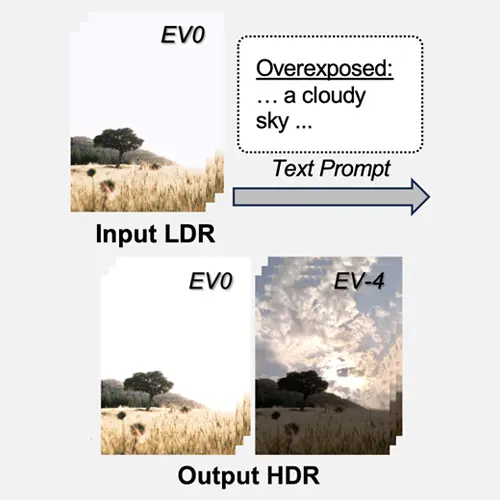
@inproceedings{yu2026diffhdr,
title={DiffHDR: Re-exposing LDR Videos with Video Diffusion Models},
author={Yu, Zhengming and Ma, Li and He, Mingming and Isikdogan, Leo and Xu, Yuancheng and Smirnov, Dmitriy and Salamanca, Pablo and Mi, Dao and Delgado, Pablo and Yu, Ning and Philip, Julien and Li, Xin and Wang, Wenping and Debevec, Paul},
year={2026},
booktitle={Proceedings of the European Conference on Computer Vision (ECCV)}
}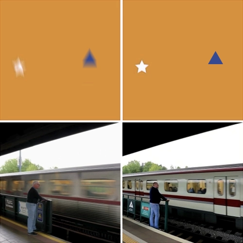
@inproceedings{cheng2026lessismore,
title={Less is More: Data-Efficient Adaptation for Controllable Text-to-Video Generation},
author={Cheng, Shihan and Kulkarni, Nilesh and Hyde, David and Smirnov, Dmitriy},
year={2026},
booktitle={Proceedings of the IEEE/CVF Conference on Computer Vision and Pattern Recognition (CVPR)}
}2025
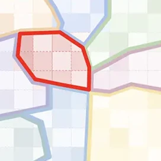
@inproceedings{deng2024infiniteresolution,
title={Infinite-Resolution Integral Noise Warping for Diffusion Models},
author={Deng, Yitong and Lin, Winnie and Li, Lingxiao and Smirnov, Dmitriy and Burgert, Ryan and Yu, Ning and Dedun, Vincent and Taghavi, Mohammed H.},
year={2025},
booktitle={Proceedings of the International Conference on Learning Representations (ICLR)}
}2024
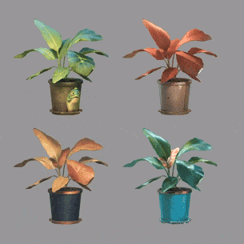
@inproceedings{lin2024diffusiontexturing,
title={A Diffusion-Based Texturing Pipeline for Production-Grade Assets},
author={Lin, Winnie and Smirnov, Dmitriy and Smith, Richard},
year={2024},
booktitle={SIGGRAPH Talks}
}2023
Magenta Green Screen: Spectrally Multiplexed Alpha Matting with Deep Colorization
DigiPro 2023, Los Angeles
@inproceedings{smirnov2023magentagreenscreen,
title={Magenta Green Screen: Spectrally Multiplexed Alpha Matting with Deep Colorization},
author={Smirnov, Dmitriy and LeGendre, Chloe and Yu, Xueming and Debevec, Paul},
year={2023},
booktitle={The Digital Production Symposium (DigiPro)}
}2022
Wassersplines for Stylized Neural Animation
SCA 2022, Durham (Best Paper Honorable Mention)
@inproceedings{zhang2022wassersplines,
title={Wassersplines for Stylized Neural Animation},
author={Zhang, Paul and Smirnov, Dmitriy and Solomon, Justin},
year={2022},
booktitle={Proceedings of the IEEE SIGGRAPH/Eurographics in Computer Animation (SCA)}
}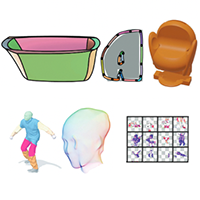
Deep Learning on Geometry Representations
PhD Dissertation, MIT Department of Electrical Engineering and Computer Science, 2022
@phdthesis{smirnov2022deep,
title={Deep Learning on Geometry Representations},
school={Massachusetts Institute of Technology},
author={Smirnov, Dmitriy},
year={2022},
}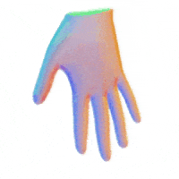
DeepCurrents: Learning Implicit Representations of Shapes with Boundaries
(* denotes equal contribution.)
CVPR 2022, New Orleans
@inproceedings{palmer2022deepcurrents,
title={{DeepCurrents}: Learning Implicit Representations of Shapes with Boundaries},
author={Palmer, David and Smirnov, Dmitriy and Wang, Stephanie and Chern, Albert and Solomon, Justin},
year={2022},
booktitle={Proceedings of the IEEE/CVF Conference on Computer Vision and Pattern Recognition (CVPR)}
}2021
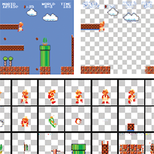
@inproceedings{smirnov2021marionette,
title={{MarioNette}: Self-Supervised Sprite Learning},
author={Smirnov, Dmitriy and Gharbi, Micha\"el and Fisher, Matthew and Guizilini, Vitor and Efros, Alexei A. and Solomon, Justin},
year={2021},
booktitle={Advances in Neural Information Processing Systems (NeurIPS)}
}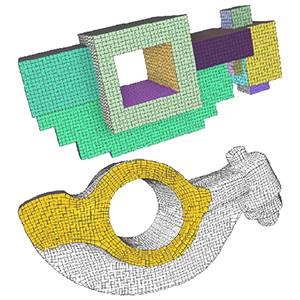
@article{li2021hex,
title={Interactive All-Hex Meshing via Cuboid Decomposition},
author={Li, Lingxiao and Zhang, Paul and Smirnov, Dmitriy and Abulnaga, Mazdak and Solomon, Justin},
month={December},
year={2021},
journal={ACM Transactions on Graphics (TOG)},
publisher={ACM},
volume={40},
number={6},
pages={256:1--256:17}
}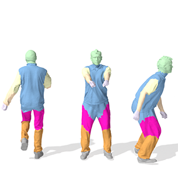
@article{smirnov2021hodgenet,
title={{HodgeNet}: Learning Spectral Geometry on Triangle Meshes},
author={Smirnov, Dmitriy and Solomon, Justin},
month={August},
year={2021},
journal={ACM Transactions on Graphics (TOG)},
publisher={ACM},
volume={40},
number={4},
pages={166:1--166:11}
}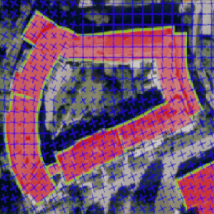
Polygonal Building Segmentation by Frame Field Learning
CVPR 2021, online (Oral Presentation, Best Paper Finalist)
IGARSS 2020, online (Oral Presentation)
@inproceedings{girard2021pbs,
title={Polygonal Building Segmentation by Frame Field Learning},
author={Girard, Nicolas and Smirnov, Dmitriy and Solomon, Justin and Tarabalka, Yuliya},
year={2021},
booktitle={Proceedings of the IEEE/CVF Conference on Computer Vision and Pattern Recognition (CVPR)}
}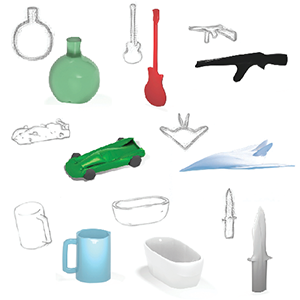
@inproceedings{smirnov2021patchbased,
title={Learning Manifold Patch-Based Representations of Man-Made Shapes},
author={Smirnov, Dmitriy and Bessmeltsev, Mikhail and Solomon, Justin},
year={2021},
booktitle={Proceedings of the International Conference on Learning Representations (ICLR)}
}2020
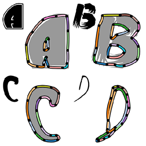
@inproceedings{smirnov2020dps,
title={Deep Parametric Shape Predictions using Distance Fields},
author={Smirnov, Dmitriy and Fisher, Matthew and Kim, Vladimir G. and Zhang, Richard and Solomon, Justin},
year={2020},
booktitle={Proceedings of the IEEE/CVF Conference on Computer Vision and Pattern Recognition (CVPR)}
}Earlier work
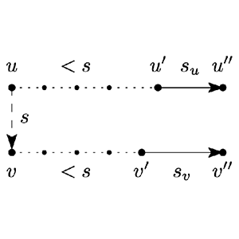
Triplet Merge Trees
Topological Methods in Data Analysis and Visualization V, 2020
TopoInVis 2017, Tokyo (Best Paper)
@article{smirnov2020tmt,
title={Triplet Merge Trees},
author={Smirnov, Dmitriy and Morozov, Dmitriy},
year={2020},
journal={Topological Methods in Data Analysis and Visualization V}
}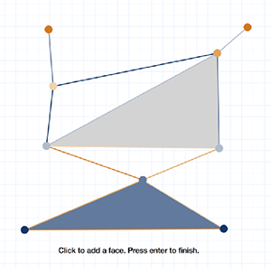
SimpleX: Software tools for visualizing functions on simplicial complexes
Senior thesis in mathematics, Pomona College, 2017 (with Distinction)
@misc{smirnov2017simplex,
title={{SimpleX}: Software tools for visualizing functions on simplicial complexes},
author={Smirnov, Dmitriy},
year={2017},
howpublished={Senior thesis in mathematics, Pomona College},
url={https://dsmirnov.com/simplex-proj/simplex.pdf}
}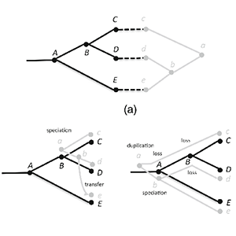
@article{ma2017dtlrepair,
title={{DTL} reconciliation repair},
author={Ma, Weiyun and Smirnov, Dmitriy and Libeskind-Hadas, Ran},
year={2017},
journal={BMC Bioinformatics},
volume={18},
number={Suppl 3},
pages={76},
doi={10.1186/s12859-017-1463-9}
}Visualizing Scissors Congruence
SoCG 2016, Boston
Experts’ Choice in the 2018 NSF Vizzies Visualization Challenge
@inproceedings{devadoss2016scissors,
title={Visualizing Scissors Congruence},
author={Devadoss, Satyan L. and Epstein, Ziv and Smirnov, Dmitriy},
year={2016},
booktitle={32nd International Symposium on Computational Geometry (SoCG 2016)},
series={Leibniz International Proceedings in Informatics (LIPIcs)},
volume={51},
pages={66:1--66:3},
doi={10.4230/LIPIcs.SoCG.2016.66}
}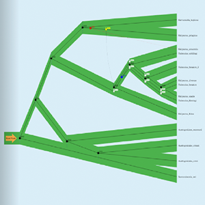
DTL-RnB: Algorithms and Tools for Summarizing the Space of DTL Reconciliations
IEEE/ACM Transactions on Computational Biology and Bioinformatics 15.2, 2018
APBC 2016, San Francisco
@article{ma2018dtlrnb,
title={{DTL-RnB}: Algorithms and Tools for Summarizing the Space of {DTL} Reconciliations},
author={Ma, Weiyun and Smirnov, Dmitriy and Forman, Juliet and Schweickart, Annalise and Slocum, Carter and Srinivasan, Srinidhi and Libeskind-Hadas, Ran},
year={2018},
journal={IEEE/ACM Transactions on Computational Biology and Bioinformatics},
volume={15},
number={2},
pages={411--421},
doi={10.1109/TCBB.2016.2537319}
}